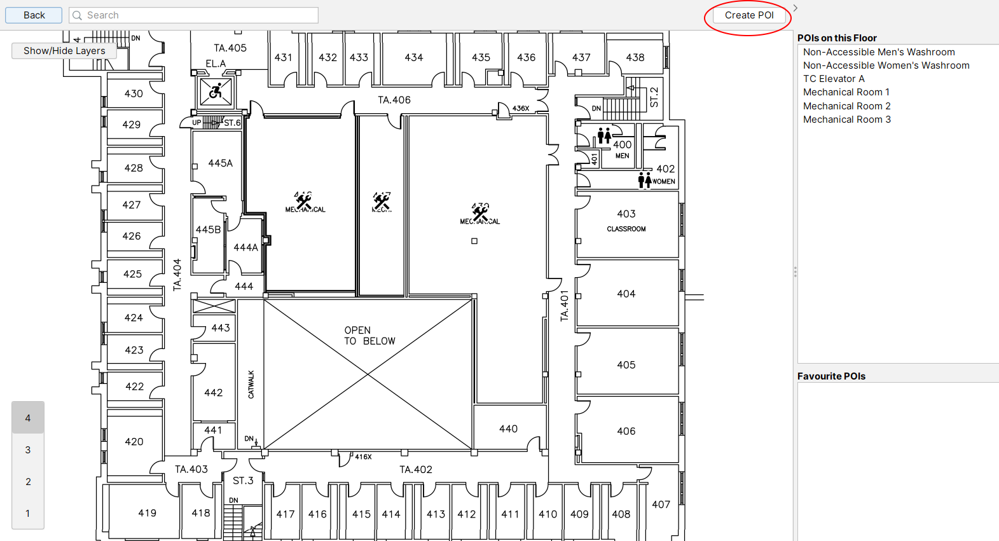

In addition to the built-in POIs, you can create your own POIs using the "Create POI" button in the top-right of the map screen.
This creates a custom POI. Selecting a custom POI allows you to edit its name and description. Its location can be changed by dragging the POI icon on the map screen.
Like the built-in POIs, custom POIs can also be marked as favorite. All custom POIs are placed in their own Custom layer, which can be toggled just like the other layers. Custom POIs are specific to your user, and will persist in between application sessions.
To remove a custom POI, select it and click "Delete POI".